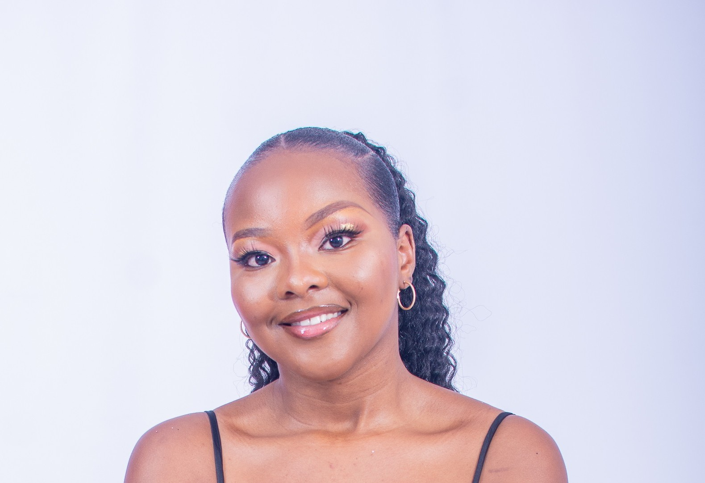

Computer Science with AI Student |Aspiring AI Engineer| Web Developer

I’m Florence Tinevimbo Chigwida, a second-year Computer Science with Artificial Intelligence student at the University of Nottingham Malaysia. I’m passionate about web development, data-driven problem solving, and creating AI-powered solutions that make an impact.
Beyond technology, I enjoy reading novels, exploring new places, and learning about different cultures ,experiences that inspire creativity and fresh perspectives in my work.
I’m currently working on a research project focused on estimating the mass of oil palm fresh fruit bunches (FFB) using RGB images and deep learning. The goal is to develop an AI model that automates and improves the accuracy of fruit mass prediction, helping to make agricultural production more efficient. This project allows me to explore computer vision, machine learning, and real-world data applications — areas that align closely with my passion for AI-driven innovation.
Machine learning solution for Kommunity Brew to automate sales prediction and enhance efficiency.
View on GitHubResponsive corporate website built with HTML, CSS, JavaScript, and PHP.
View on GitHubMachine learning solution for Kommunity Brew to automate sales prediction and enhance efficiency.
View on GitHub